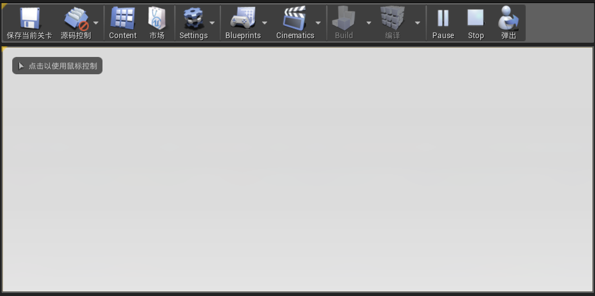

虚幻4之Slate学习一 —— HUD
本章简介
- 为项目添加Slate依赖库
- 创建容纳各种Widget的HUD类
- 创建自定义Widget类并将其添加到视口
- 设置光标的相关属性
Slate库
想要使用Slate的库，必须在项目工程中包含相关的依赖库。在VS工程中找到 ProjectName.Build.cs，在其中添加
PublicDependencyModuleNames.AddRange
(
new string[]
{
"Core",
"CoreUObject",
"Engine",
"InputCore",
"Slate",
"SlateCore"
}
);这样我们就能使用Slate库了。
创建HUD
什么是HUD
HUD是平视显示器的缩写，其与UI的有区别，但较难阐述。此处只需知道，Slate库使用HUD来作为容器，即在HUD中编写相关控件
设置自定义HUD
- 创建一个继承于HUD的C++类，此处命名为MyHUD
- 在MySlateGameModeBase.cpp中将HUD class改为MyHUD
也可以直接创建GameModeBase类，并在世界设置中改为自定义GameModeBase类
/** MySlateGameModeBase.cpp **/
#include "MySlateGameModeBase.h"
#include "Public\UI\MyHUD.h"
AMySlateGameModeBase::AMySlateGameModeBase()
{
HUDClass = AMyHUD::StaticClass();
}这样在在初始化游戏时，就会默认调用自定义的HUD
将自定义Widget添加到视口
- 先创建自定义Widget的C++类，起名为MyHUDWidget
- 在MyHUD的构建函数中将MyHUDWidget添加到视口，这样在开始游戏时将自动调用
/** MyHUD.h **/
private:
TSharedPtr<class SMyHUDWidget> HUDWidget;/** MyHUD.cpp **/
AMyHUD::AMyHUD()
{
if (GEngine && GEngine->GameViewport)
{
SAssignNew(HUDWidget, SMyHUDWidget);
GEngine->GameViewport->AddViewportWidgetContent(SNew(SWeakWidget).PossiblyNullContent(HUDWidget.ToSharedRef()));
}
}如何创建控件实例
- 创建控件实例有下面两种方法
- SAssignNew(TSharedPtr
,SlateWidgetClassName); 将创建的控件保存到共享指针中
- SNew(SlateWidgetClassName)
如何将MyHUDWidget从视口中添加和删除
- 将控件添加到视口中
TSharedPtr<MyWidget> MyWidgetPtr; GEngine->GameViewport->AddViewportWidgetContent( SNew(SWeakWidget). PossiblyNullContent(MyWidgetPtr.ToSharedRef()) ); - 将控件从视口删除
GEngine->GameViewport->RemoveViewportWidgetContent( SNew(MyWidgetPtr.ToSharedRef()) ); - 将视口中的全部控件删除
GEngine->GameViewport->RemoveAllViewportWidgets();
设置光标
- 这里光标是默认的，我们需要让光标一直显示，不然对后面会有影像。
- 我们创建继承于PlayerController的MyController类。
/** MyController.cpp **/
AMyController::AMyController()
{
/** Whether the mouse cursor should be displayed. */
bShowMouseCursor = true;
}- 我们还可以设置光标的移动范围
/** MyController.cpp **/
void AMyController::BeginPlay()
{
/** Data structure used to setup an input mode that allows only the UI to respond to user input. */
FInputModeUIOnly InputMode;
/** Sets the mouse locking behavior of the viewport */
InputMode.SetLockMouseToViewportBehavior(EMouseLockMode::LockAlways);
SetInputMode(InputMode);
}- 在Gamemode中应用，这样光标一直显示，且不能移出视口
/** MySlateGameModeBase.cpp **/ #include "MySlateGameModeBase.h" #include "Public\UI\MyHUD.h" #include "Public\MyController.h"
AMySlateGameModeBase::AMySlateGameModeBase()
{
HUDClass = AMyHUD::StaticClass();
PlayerControllerClass = AMyController::StaticClass();
}
# 总结
到目前为止,准备工作算是做好了。我们可以测试以下是否成功。在MyHUDWidget中添加代码
```cpp
/** SMyHUDWidget.cpp **/
#include "SMyHUDWidget.h"
#include "SlateOptMacros.h"
#include "SButton.h"
BEGIN_SLATE_FUNCTION_BUILD_OPTIMIZATION
void SMyHUDWidget::Construct(const FArguments& InArgs)
{
ChildSlot
[
SNew(SButton)
];
}
END_SLATE_FUNCTION_BUILD_OPTIMIZATION
这样你将看到屏幕中一个全屏填满的按钮

如果无法编译,尝试在SMyHUDWidget中添加#include “DeclarativeSyntaxSupport.h”头文件
相关链接
- 下章链接
虚幻4之Slate学习二 —— Slate控件样式 - 章节总览
虚幻4之Slate学习
文章标题:虚幻4之Slate学习一 —— HUD
本文作者:Sanctorum003
发布时间:2019-08-02, 10:07:12
最后更新:2019-08-07, 19:41:55
原始链接:https://sanctorum.github.io/2019/08/02/HUD/版权声明: "署名-非商用-相同方式共享 4.0" 转载请保留原文链接及作者。